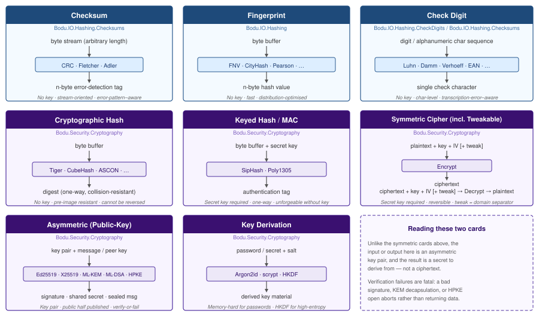

Bodu.Security.Cryptography

Bodu.Security.Cryptography is the cryptographic primitives package of the Bodu suite, and one half of the Hashing & Cryptography topic — managed block ciphers, authenticated encryption, keyed hashes, cryptographic digests, elliptic-curve and post-quantum public-key primitives, and password-hashing and key-derivation functions, all with a formal adversary model. The block ciphers, cryptographic digests, MACs, and public-key schemes plug into the standard BCL contracts (SymmetricAlgorithm, HashAlgorithm, AsymmetricAlgorithm, plus Bodu's own IBlockCipher / TweakableSymmetricAlgorithm), so any code that already speaks .NET cryptography can adopt these types without changes. A few families deliberately use their own shapes instead — the stream ciphers (SymmetricStreamAlgorithm), the AEAD transforms (IAeadTransform / IAeadBlockCipherModeTransform), the ASCON XOFs (absorb / squeeze), the Merkle tree hashes, and the static KDF / OTP helpers.
The library lives in two namespaces: Bodu.Security.Cryptography for primitives, and Bodu.Security.Cryptography.Extensions for ergonomic helpers.
Important
Cryptographic primitives are easy to misuse. Even algorithm-correct implementations leak security when used incorrectly. Before adopting this library in production, internalise these rules:
- Never reuse a nonce or IV under the same key. Stream ciphers and most AEAD modes lose all confidentiality on nonce reuse. Use a counter or
RandomNumberGenerator.GetBytesfor unpredictability where required. - Always verify the AEAD authentication tag before trusting decrypted plaintext. The library's AEAD transforms reject mismatched tags with
CryptographicException— do not catch and ignore. - Compare tags and digests in constant time. Use
CryptographicOperations.FixedTimeEqualsor the BCL constant-time helpers when checking MAC equality. - Prefer AEAD over encrypt-then-MAC-by-hand. Authenticated modes (GCM, OCB, EAX, SIV) bundle confidentiality and authenticity in a single primitive with fewer pitfalls.
- Prefer the BCL where it covers your case.
System.Security.Cryptographyships hardware-accelerated AES, AES-GCM, and SHA-2/3 implementations. Reach for the Bodu primitives when you need an algorithm the BCL does not ship (Threefish, Camellia, Ascon, BLAKE2/3, Skein, …). - Hash passwords with a memory-hard KDF, never a bare digest. Use
Argon2id(orScrypt) with a per-password salt for stored passwords; reserveHkdffor stretching high-entropy inputs such as a Diffie-Hellman shared secret or a KEM output. - Treat every verification failure as fatal. A failed signature check, KEM decapsulation, or HPKE open must abort the operation — do not fall back to the unverified data. Import only public keys you obtained over a trusted channel.
See the Core concepts page for the full safety vocabulary and the cipher-modes and AEAD-modes guides for worked-example walkthroughs.
The shape of the library

Every algorithm here is designed against a formal adversary model: it must be computationally infeasible for an attacker — even one who knows the algorithm, observes many inputs and outputs, and chooses inputs adaptively — to forge, invert, or find collisions. That is the line between this package and Bodu.IO.Hashing, whose fingerprints and checksums carry no adversary model and must never be used where an attacker can choose the input.
The package spans five families. They share BCL base classes but differ structurally in what they consume and produce:

- Cryptographic hash — a one-way function compressing arbitrary input to a fixed digest, with pre-image, second-pre-image, and collision resistance. Three structural shapes: plain digest (fixed output), extendable output (XOF — squeeze any number of bytes), and tree (parallel leaves combined into a verifiable root). Use for content addressing, integrity verification, and signature inputs — not for authentication on its own.
- Keyed hash / MAC — a secret key plus a message yields an authentication tag that no one can forge without the key. Two subtypes: a reusable PRF (SipHash — one key authenticates many messages) and a one-time authenticator (Poly1305 — the key must never be reused).
- Symmetric cipher — reversible encryption under a key, in four subtypes: a standard block cipher; a tweakable block cipher, where a public tweak gives per-record or per-sector domain separation without re-keying; a stream cipher, which XORs a key/nonce-derived keystream over data of any length (raw confidentiality, no authentication); and AEAD, which encrypts and authenticates in a single pass.
- Asymmetric (public-key) — a key pair, where one half is published and the other kept secret, in four roles: a signature scheme (sign with the private key, verify with the public key — Ed25519 and the post-quantum ML-DSA); key agreement (two public keys derive a shared secret — X25519); a KEM (encapsulate a fresh secret to a public key — the post-quantum ML-KEM); and HPKE, which seals a message to a recipient's public key by combining a KEM, a KDF, and an AEAD.
- Key derivation & password hashing — turns one secret into key material. A memory-hard password hash (Argon2id, scrypt) stretches a low-entropy password so offline guessing is expensive; an extract-and-expand KDF (HKDF) derives one or more context-bound keys from a high-entropy input.
Keyed hash vs cipher. Both take a key, but they serve opposite purposes. A cipher transforms plaintext to ciphertext and back without summarizing; a MAC summarizes a message into a fixed-size tag without encrypting. Use both together — encrypt-then-MAC, or an AEAD mode — when you need confidentiality and integrity.
ASCON is multi-role. The ASCON family (NIST SP 800-232) spans the cryptographic-hash, XOF, and AEAD roles under a single sponge permutation, which makes it a compact one-primitive choice for constrained environments. It appears in both the hash and AEAD tables below.
Choosing a primitive
A compact decision table for the most common requirements. The "BCL alternative" column flags the case where System.Security.Cryptography already ships a hardware-accelerated implementation — start there unless the algorithm column is the specific reason you reached for Bodu.
| If you need… | Reach for | Output | Standards | BCL alternative |
|---|---|---|---|---|
| Confidentiality only, block cipher | Camellia, Twofish, Serpent128/256/512/1024, Threefish256/512/1024, Blowfish, Skipjack |
Block-aligned ciphertext + IV | RFC 3713 / FIPS-181 / NIST CFL / Threefish whitepaper | Aes (BCL — preferred for 128-bit-block AES) |
| Confidentiality only, stream cipher | ChaCha20, XChaCha20, Salsa20, XSalsa20, Rabbit, Hc128 |
Keystream-XOR ciphertext | RFC 7539 / XSalsa20 paper / eSTREAM | None (for these specific algorithms) |
| Confidentiality + integrity + authenticity (AEAD) | Aes + GcmModeTransform / CcmModeTransform / OcbModeTransform / EaxModeTransform / SivModeTransform / GcmSivModeTransform; or AsconAead128 |
Ciphertext + auth tag | NIST SP 800-38D / RFC 5116 / RFC 7253 / NIST SP 800-232 | AesGcm, AesCcm (BCL — preferred for those modes) |
| Per-record / per-sector encryption with public domain separation | Threefish256/512/1024 with Tweak; XtsModeTransform |
Tweakable ciphertext | IEEE P1619 (XTS) / Threefish whitepaper | None |
| Cryptographic digest for content addressing | Tiger, CubeHash, Whirlpool, Snefru, Blake2b, Blake3, AsconHash256, Skein256/512/1024 |
128 – 1024 bits | NESSIE / SHA-3 / RFC 7693 / NIST SP 800-232 | SHA256, SHA384, SHA512, SHA3_256 (BCL — preferred where available) |
| Variable-length / extendable output (XOF) | AsconXof128, AsconCxof128, Shake |
Configurable | NIST SP 800-185 / FIPS 202 / NIST SP 800-232 | Shake128, Shake256 (BCL — preferred where available) |
| Keyed hash / MAC (reusable PRF) | SipHash64, SipHash128 |
64 / 128 bits | Aumasson & Bernstein SipHash paper | HMACSHA256 (BCL) |
| One-time message authenticator (key + message — never reuse key) | Poly1305 |
128 bits | RFC 8439 | None — paired with ChaCha20 in BCL ChaCha20Poly1305 |
| Verifiable tree hashing (RFC 6962 root over entries, fixed-size blocks, or a write-time accumulator, plus inclusion / consistency proofs and length-bound roots; wider fan-out as an explicit non-RFC mode) | MerkleTree, MerkleBlockAccumulator |
Configurable leaf hash | RFC 6962 §2.1 / Certificate Transparency | None |
| Digital signature (classical, sign / verify) | Ed25519 |
64-byte deterministic signature | RFC 8032 | None on net8.0 |
| Digital signature (post-quantum) | MLDsa44, MLDsa65, MLDsa87 |
2420 – 4627-byte signature | FIPS 204 | None on net8.0 |
| Key agreement (derive a shared secret from two public keys) | X25519 |
32-byte shared secret | RFC 7748 | None on net8.0 |
| Key encapsulation (post-quantum, seal a fresh secret to a public key) | MLKem512, MLKem768, MLKem1024 |
32-byte secret + ciphertext | FIPS 203 | None on net8.0 |
| Seal a message to a recipient's public key (hybrid PKE) | Hpke |
Encapsulated key + ciphertext + tag | RFC 9180 | None on net8.0 |
| Password hashing / storage (memory-hard) | Argon2id, Argon2i, Argon2d, Scrypt |
Salted derived tag | RFC 9106 / RFC 7914 | None on net8.0 |
| Authenticated stream encryption (extended-nonce stream cipher + Poly1305) | XChaCha20Poly1305, XSalsa20Poly1305Aead, XSalsa20Poly1305 (libsodium secretbox) |
Ciphertext ‖ 16-byte tag | RFC 8439 framing / NaCl | ChaCha20Poly1305 (BCL — 96-bit nonce only) |
| One-time passcodes (authenticator apps, hardware tokens) | Hotp, Totp |
6–8 digit code | RFC 4226 / RFC 6238 | None |
| Derive keys from a high-entropy secret (extract-and-expand) | Hkdf |
Configurable | RFC 5869 | HKDF (BCL — preferred where it covers your hash) |
Cryptographic digests in this table provide integrity only when the digest itself is transmitted via an authenticated channel. For integrity + authenticity in a single primitive, pick a MAC or an AEAD mode. See the Core concepts page for the full safety vocabulary.
Subfamilies and headline types
Standard symmetric block ciphers
SymmetricAlgorithm lifecycle: configure Key, IV, the Bodu-specific BlockMode (and the inherited Padding), then call CreateEncryptor() / CreateDecryptor() or the Encrypt / Decrypt extension methods.
| Type | Block | Key | Notes |
|---|---|---|---|
| Skipjack | 64 bits | 80 bits | NSA design (declassified 1998); legacy interoperability only. |
| Blowfish | 64 bits | 32–448 bits | Schneier 1993; expensive key schedule. |
| Camellia | 128 bits | 128 / 192 / 256 bits | NTT/Mitsubishi (RFC 3713); ISO/IEC 18033-3. |
| Twofish | 128 bits | 128 / 192 / 256 bits | Schneier et al., AES finalist (1998). |
| Serpent128 | 128 bits | 128 / 192 / 256 bits | Anderson/Biham/Knudsen, AES finalist; highest margin. |
Tweakable symmetric block ciphers
TweakableSymmetricAlgorithm lifecycle adds Tweak and GenerateTweak() to the standard surface — domain separation without re-keying.
| Type | Block | Key | Tweak | Notes |
|---|---|---|---|---|
| Threefish256 | 256 bits | 256 bits | 128 bits | Core of Skein-256. |
| Threefish512 | 512 bits | 512 bits | 128 bits | Core of Skein-512; recommended general-purpose variant. |
| Threefish1024 | 1024 bits | 1024 bits | 128 bits | Highest margin; most padding waste for short messages. |
| Serpent256 | 256 bits | 256 bits | 128 bits | Wide-block tweakable Serpent — non-standard construction. |
| Serpent512 | 512 bits | 512 bits | 128 bits | Wide-block tweakable Serpent — non-standard construction. |
| Serpent1024 | 1024 bits | 1024 bits | 128 bits | Wide-block tweakable Serpent — non-standard construction. |
Stream ciphers
SymmetricStreamAlgorithm lifecycle — not a SymmetricAlgorithm, but a standalone IDisposable base with Key, Nonce, NonceSize, GenerateKey() / GenerateNonce(), and CreateTransform() (the self-inverse CreateEncryptor() / CreateDecryptor() are aliases): configure Key and Nonce, then create a transform or call the Encrypt / Decrypt extensions in SymmetricStreamAlgorithmExtensions. No block mode, no padding. Raw — confidentiality only, no authentication. Never reuse a (key, nonce) pair; pair with a MAC or prefer AEAD.
| Type | Key | Nonce / IV | Notes |
|---|---|---|---|
| ChaCha20 | 256 bits | 96 bits | Bernstein (RFC 8439); the modern default. |
| XChaCha20 | 256 bits | 192 bits | Extended-nonce ChaCha20 — nonce safe to choose at random. |
| Salsa20 | 128 / 256 bits | 64 bits | Bernstein (eSTREAM); 64-bit nonce requires a counter. |
| XSalsa20 | 256 bits | 192 bits | Extended-nonce Salsa20 (NaCl / libsodium). |
| Rabbit | 128 bits | 64 bits | RFC 4503; evolving internal state (no seekable counter). |
| Hc128 | 128 bits | 128 bits | Wu (eSTREAM); table-based, expensive setup. |
Authenticated stream ciphers (Poly1305 AEAD)
Extended-nonce stream ciphers paired with Poly1305 into a single-pass AEAD. Each type is an IStreamAeadTransform constructed with (key, nonce) and exposing Encrypt / Decrypt with optional associated data — byte[]-returning overloads live in AeadTransformExtensions. Single-use per message.
| Type | Key | Nonce | Notes |
|---|---|---|---|
| XChaCha20Poly1305 | 256 bits | 192 bits | XChaCha20-Poly1305 with associated data; wire layout ciphertext ‖ tag. |
| XSalsa20Poly1305Aead | 256 bits | 192 bits | XSalsa20-Poly1305 with associated data (RFC 8439 framing). |
| XSalsa20Poly1305 | 256 bits | 192 bits | The NaCl / libsodium secretbox construction (no associated data); ToLibsodiumCombined / FromLibsodiumCombined layout converters. |
| Poly1305AeadTransform | — | — | Abstract base shared by the three constructions; the extension point for further stream-cipher + Poly1305 pairings. |
Cipher composition (modes, padding, AEAD transforms)
Lower-level building blocks that the SymmetricAlgorithm wrappers compose internally — also usable directly via IBlockCipher for pairing AES with the AEAD mode transforms.
| Type | Provides |
|---|---|
| IBlockCipher | Block-cipher contract; implemented by every cipher and by AesBlockCipher. |
| AesBlockCipher | IBlockCipher over the BCL Aes engine — the bridge between AES and the AEAD mode transforms. |
| BlockCipherTransform | ICryptoTransform adapter over an IBlockCipher and a mode. |
| BlockCipherModeFactory | Builds a mode transform from a CipherModeKind value for the five classic modes (ECB, CBC, CFB, OFB, CTR) — the path the SymmetricAlgorithm facades take through BlockMode. Any other value throws NotSupportedException. |
| CipherModeKind | Enum: ECB, CBC, CFB, OFB, CTS (BCL-compatible values), plus CTR, XTS, OCB, EAX, SIV. Only the five classic modes work through BlockMode; CTS and XTS are constructed directly as transforms, and OCB / EAX / SIV name the AEAD transforms. |
| IBlockCipherModeTransform | Mode-transform contract (per-block / per-stripe). |
| IAeadBlockCipherModeTransform | AEAD-specific extension of the above; includes nonce / tag / associated-data semantics. |
| EcbModeTransform, CbcModeTransform, CfbModeTransform, OfbModeTransform, CtrModeTransform, CtsModeTransform, XtsModeTransform | Standard cipher modes. |
| GcmModeTransform, CcmModeTransform, OcbModeTransform, EaxModeTransform, SivModeTransform, GcmSivModeTransform | AEAD mode transforms. |
| IPaddingStrategy | Padding contract. |
| Pkcs7Padding, NoPadding, Iso10126Padding, Iso7816_4Padding, Ansix923Padding | Built-in padding strategies. |
| PaddingFactory + PaddingModeKind | Selects a padding strategy from an enum that mirrors System.Security.Cryptography.PaddingMode and adds ISO7816_4. |
Cryptographic hashes
HashAlgorithm lifecycle: one-shot ComputeHash, or TransformBlock … TransformFinalBlock then read Hash; the HashAlgorithmExtensions add AppendData and VerifyHash. The ASCON XOFs and the Merkle tree hashes are the exceptions — see their rows.
| Type | Output | Shape |
|---|---|---|
| Tiger | 128 / 160 / 192 bits | Plain digest (1995); two padding variants via Tiger.Variant (TigerHashingVariant). |
| CubeHash | Configurable | Plain digest; tunable rounds / block size. |
| Snefru128 / Snefru256 | 128 / 256 bits | Plain digest — cryptanalytically broken, interop only. |
| Whirlpool | 512 bits | Plain digest (ISO/IEC 10118-3); WhirlpoolVersion selects the variant. |
| Blake2b / Blake2s | Configurable | Modern high-throughput plain digest. |
| Blake3 | 256 bits | Parallel, tree-structured digest; fixed 256-bit output (parameterless constructor, no XOF surface). |
| Skein256 / Skein512 / Skein1024 | Configurable | Plain digest built on Threefish in UBI mode. |
| Shake | Variable | Keccak XOF (FIPS 202). |
| AsconHash256 / AsconHashA256 | 256 bits | NIST SP 800-232 sponge digest; 12 / 8 round variants. |
| AsconXof128 / AsconCxof128 | Variable | NIST SP 800-232 XOF / customizable XOF. Not a HashAlgorithm — a sponge surface: Absorb, Squeeze, GetHash(outputLength), static HashData. |
| MerkleTree / MerkleBlockAccumulator | Inner digest width | The RFC 6962 Merkle Tree Hash over any inner HashAlgorithm supplied as a Func<HashAlgorithm>: roots over entries (ComputeRoot), over fixed-size blocks of a stream, memory, or span (ComputeBlocked / ComputeRootOfBlocks, with async twins), or fed incrementally through CreateBlockAccumulator; inclusion and consistency proofs; BindRoot length-bound roots. Parallel leaf hashing and a non-RFC fan-out are constructor options; every root computation accepts an optional MerkleTreeDiagnostics recorder. |
| BlockHashAlgorithm, BufferedBlockHashAlgorithm, DeferredFinalBlockHashAlgorithm, KeyedBlockHashAlgorithm | — | Abstract bases for block-oriented digests (extension points). |
| HashAlgorithmFactory, IHashAlgorithmFactory<T>, DelegateHashAlgorithmFactory<T> | — | Factory abstraction over HashAlgorithm for keyed constructions. |
Keyed hashes / MACs
HashAlgorithm with a required Key property.
| Type | Output | Subtype |
|---|---|---|
| SipHash64 | 64 bits | PRF; default rounds SipHash-2-4. |
| SipHash128 | 128 bits | PRF; wider output for routing / sharding. |
| Poly1305 | 128 bits | One-time authenticator (RFC 8439). |
Asymmetric primitives — signatures, key agreement, KEM, HPKE
Public-key schemes over AsymmetricAlgorithm. Lifecycle: Create(), GenerateKey(), export the public half, then sign / verify, agree, or encapsulate. Key formats differ by family: Ed25519 / X25519 carry the RFC 8410 PKCS#8 / SubjectPublicKeyInfo DER containers (ImportPkcs8PrivateKey / ImportSubjectPublicKeyInfo and the TryExport… pair) and, through the base-class helpers, RFC 7468 PEM; the ML-KEM / ML-DSA types expose raw FIPS encodings only and throw on the ASN.1 members. Encrypted PKCS#8 is out of scope everywhere.
| Type | Role | Standard | Notes |
|---|---|---|---|
| Ed25519 | Signature | RFC 8032 | Deterministic EdDSA over edwards25519; 32-byte keys, 64-byte signature, 128-bit security. SignData / VerifyData. |
| MLDsa44 / MLDsa65 / MLDsa87 | Signature (post-quantum) | FIPS 204 | Module-lattice ML-DSA; MLDsa65 the default. Signatures 2420 – 4627 bytes; API mirrors Ed25519. |
| X25519 | Key agreement | RFC 7748 | ECDH over Curve25519; 32-byte keys and 32-byte shared secret. DeriveSharedSecret(peerPublicKey). |
| MLKem512 / MLKem768 / MLKem1024 | KEM (post-quantum) | FIPS 203 | Module-lattice ML-KEM; MLKem768 the default. Encapsulate() / Decapsulate(ciphertext) / ExportEncapsulationKey(). |
| Hpke, HpkeSender, HpkeReceiver, HpkeSuite | Hybrid PKE | RFC 9180 | DHKEM(X25519, HKDF-SHA256) + HKDF + AEAD. Hpke.Seal / Hpke.Open; suites X25519_HkdfSha256_Aes128Gcm / _Aes256Gcm / _ChaCha20Poly1305. |
| SignatureFormat, SignatureValue | — | — | Signature-encoding selector and value type shared by the signature schemes. |
See the asymmetric overview and HPKE guides for worked walk-throughs.
Key derivation & password hashing
Turn one secret into key material. Memory-hard password hashes stretch low-entropy passwords; HKDF expands a high-entropy secret into context-bound keys.
| Type | Standard | Notes |
|---|---|---|
| Argon2id / Argon2i / Argon2d | RFC 9106 | Memory-hard password hash; Argon2id the recommended default. Argon2Parameters carries MemoryKiB, Iterations, Parallelism, TagLength. One-shot Argon2id.DeriveKey(password, salt, parameters). |
| Scrypt | RFC 7914 | Memory-hard password hash; ScryptParameters carries CostN, BlockSizeR, Parallelization. Peak memory ≈ 128 · N · r bytes. |
| Hkdf | RFC 5869 | HMAC extract-and-expand over SHA-1/256/384/512; Extract / Expand / DeriveKey. Backs the HPKE labeled KDF. Not a password hash — feed it high-entropy input only. |
See the Argon2, scrypt, and HKDF guides.
One-time passwords
Static helpers for the HMAC-based one-time-password schemes behind authenticator apps and hardware tokens; the hash is selected with OtpHashAlgorithm (SHA-1 default, SHA-256, SHA-512).
| Type | Standard | Notes |
|---|---|---|
| Hotp | RFC 4226 | Counter-based: GenerateCode(secret, counter, digits, algorithm) and VerifyCode with an optional look-ahead window that reports the matched counter. |
| Totp | RFC 6238 | Time-based over HOTP: GenerateCode(secret, timestamp, digits, periodSeconds, algorithm) and VerifyCode with a ± step window that reports the matched step offset. |
ASCON family — multi-role
Spans hash, XOF, and AEAD under a single sponge permutation. NIST SP 800-232.
| Type | Role |
|---|---|
| AsconHash256 / AsconHashA256 | 256-bit cryptographic digest |
| AsconXof128 / AsconCxof128 | Variable-length / customizable XOF |
| AsconAead128 | 128-bit-key authenticated encryption |
Extensions
| Type | Provides |
|---|---|
| SymmetricAlgorithmExtensions | Encrypt, Decrypt, EncryptAsync, DecryptAsync, TryCreateEncryptor, TryCreateDecryptor. |
| TweakableSymmetricAlgorithmExtensions | TryCreateEncryptor / TryCreateDecryptor overloads that accept a tweak. |
| AeadBlockCipherModeTransformExtensions | One-shot AEAD encrypt / decrypt over IBlockCipher + IAeadBlockCipherModeTransform. |
| HashAlgorithmExtensions | AppendData, AppendDataAsync, VerifyHash, VerifyHashAsync, TryVerifyHash, TryVerifyHashAsync. |
| ICryptoTransformExtensions | Transform, TransformAsync, TransformBlock, TransformFinalBlock over a stream. |
Helpers
| Type | Purpose |
|---|---|
| HashAlgorithmHelper | Helper utilities for HashAlgorithm consumers. |
Random key/IV/tweak generation, padding helpers, and secure-clear helpers ship as internal infrastructure; consumers reach them indirectly through the extension surfaces above.
Scenarios this library covers
| Scenario | Reach for |
|---|---|
| Encrypt a message under a key | Threefish512, Camellia, Twofish, Serpent128, Blowfish, Skipjack |
| Per-record / per-sector encryption without re-keying | Threefish256 / Threefish512 / Threefish1024 with Tweak |
| Stream encryption of arbitrary-length data (no padding) | ChaCha20, XChaCha20, Salsa20, XSalsa20, Rabbit, Hc128 |
| Authenticated encryption (encrypt + integrity in one) | AesBlockCipher + GcmModeTransform, AsconAead128 |
| Hash-table flooding defense | SipHash64 / SipHash128 |
One-time authenticator (e.g. paired with ChaCha20) |
Poly1305 |
| Cryptographic digest for content addressing | Tiger, CubeHash, AsconHash256, Blake2b, Whirlpool, Skein512 |
| Variable-length output | AsconXof128, AsconCxof128, Shake |
| Tree hashing with verifiable inclusion or consistency proofs | MerkleTree |
| A Merkle root computed from the same writes that feed a flat digest | MerkleTree.CreateBlockAccumulator |
| Sign a message and verify it with a distributed public key | Ed25519 (classical), MLDsa65 (post-quantum) |
| Establish a shared secret between two parties | X25519 (classical), MLKem768 (post-quantum) |
| Encrypt a payload so only a given public key can read it | Hpke |
| Store a password so offline guessing is expensive | Argon2id, Scrypt |
| Derive session / traffic keys from a shared secret | Hkdf |
| Authenticated encryption with a random 192-bit nonce and no block cipher | XChaCha20Poly1305, XSalsa20Poly1305Aead |
| Generate or verify an authenticator-app code | Totp (time-based), Hotp (counter-based) |
Where to go next
- Core concepts — glossary the rest of the documentation assumes.
- Getting started — install + minimal sample for a cipher, an AEAD round-trip, a keyed hash, and a digest.
- Bodu.Security.Cryptography guides — recipe-style walk-throughs.
- Asymmetric cryptography overview — signatures, key agreement, KEM, and the HPKE seal-to-public-key recipe.
- Bodu.Security.Cryptography API reference — full type-by-type docs.
- For non-cryptographic checksums and fingerprints (CRC, Fletcher, Adler, FNV, CityHash, MurmurHash3), see Bodu.IO.Hashing.
- Hashing & Cryptography topic — this package and its sibling Bodu.IO.Hashing side by side.